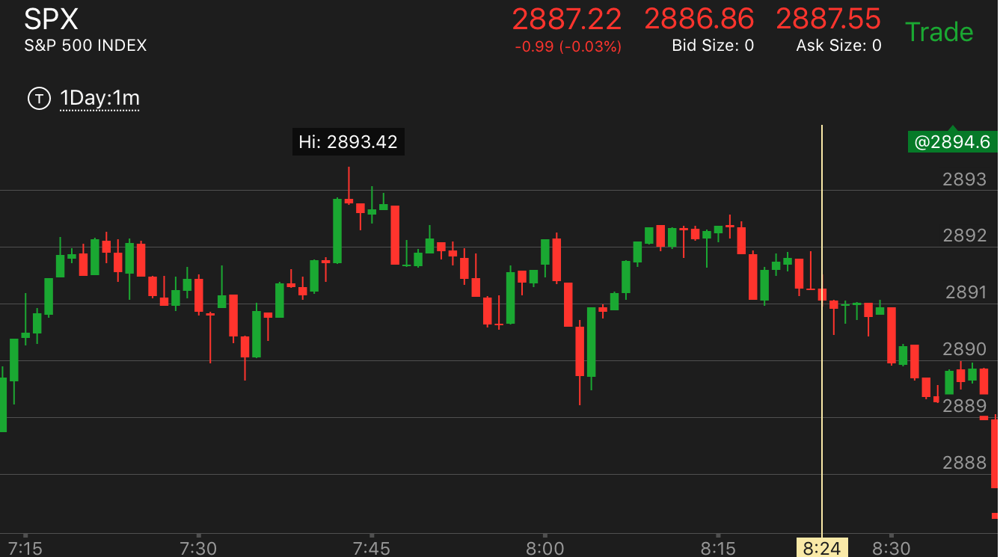

确定性的相对速度的预测
开始下跌速度很快，拉回后，再次缓慢下跌，这样会大大超过原理的低点。可以在它反复出现下跌走势的时候做空。不要再拉回的地方做空，因为可能是上涨走势
上涨也有类似的情况
确定性的相对速度的预测
确定性的相对速度的预测
TOP

图示：8:00的时候，快速下跌，然后拉回，走平。8：15开始缓慢下跌，一个台阶一个台阶的下跌。到了第二个台阶。可以确定。它要大跌了。 至少低于前面的8：00到达的低点。可以放心做空。